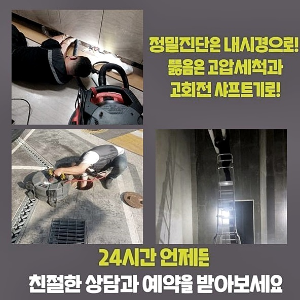
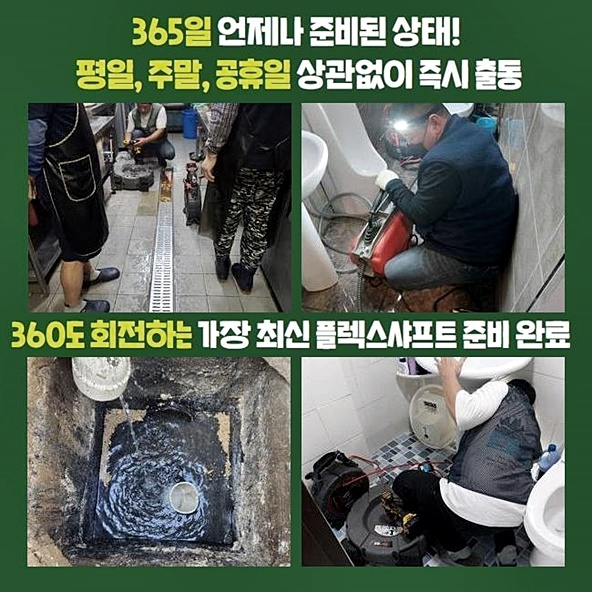
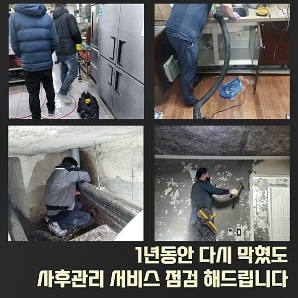
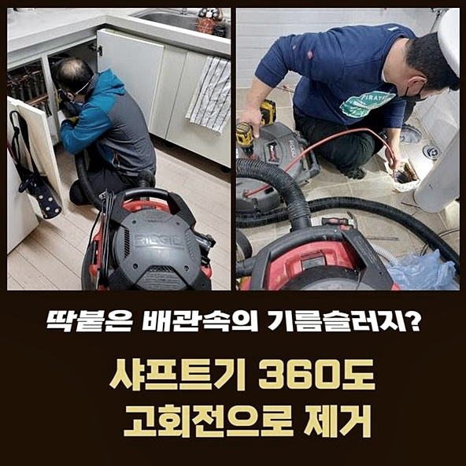
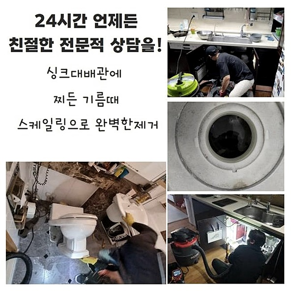
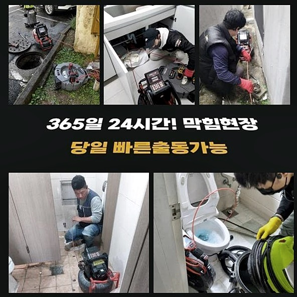

🏠 금정동씽크대배수구역류 송부동 고압세척비용 설비업체
용인시 처인구 배관막힘 전문 시공 후기

📋 작업 개요
- 위치: 용인시 처인구, 수원시 영통구, 화성시 동탄
- 서비스 유형: 배관막힘, 하수구청소, 누수수리, 고압세척, 내시경점검
- 작업 일시:
- 업체명: 하수구수사대 (010-5615-2118)
🔍 문제 상황
금정동씽크대배수구역류 송부동 고압세척비용 설비업체
데일리로 쓰는 장소 중에서도 특히나 물의 이용도가 집중된 화장실이나 개수대는 물이 단수되는 것도 곤란함을 빚을 수 있지만 쓴 물이 원활하게 폐수가 제한이 걸리는 것 역시 씻고 먹는 기본 행위에 커다란 지장을 주는 커다란 사건입니다
이번에 이야기나눌 작업지는 모든 하수관들이 일제히 마비되고 역류되는 증세까지도 많은 호실에서 빚어지는 실태라며 저희에게 출장을 의뢰하셨어요
많은 곳에서 불편함을 품고 있으므로 한시라도 빠르게 개선시켜달라고 간곡히 요청하셨던 고객님이셔서 날이 바뀌면 빠르게 도달하겠다고 안심시켜드리고 여러 툴들을 야무지게 챙겨서 곤란을 겪는 건물로 자리를 옮기게 되었습니다
이번 케이스와 같이 공공 배관 쪽의 문제라면 다른건 턱도 없고 오직 고압세척을 해야할 경우가 통계적으로 잦으므로 사무실에서 출발하기 전에 고압수를 발포하는 도구도 빠지지 않고 챙겨갔어요
리스트를 검색해 보니 다수의 업체 가운데서 지인분이 강력하게 권장하신 저희들에게 믿고 전화했다 하셨네요
사건과 관련되어 있는 상담 시간을 가볍게 갖고 원인을 규명할 수 있도록 검토부터 순차적으로 걸어보기 시작했습니다
한 세대를 넘어 여러 곳에서 동일한 이슈를 경험하고 소규모의 배관이 아니라 중심이 되는 시스템이 마비된 상황으로 보인다면 흔한 장치로는 개선을 볼 수 없어요
그 예로는 흡입을 하는 석션기나 뭉친 찌꺼기를 원활하게 스케일링하는 플렉스샤프트같은 툴을 활용하여 막힌 측면을 조치하는 건 많이 부족할 수 있어요

🔎 원인 분석
💡 전문가 진단: 정밀 진단 장비를 사용하여 슬러지의 고착 여부를 판명하고 타격/세척 작업을 실시했습니다.
보다 고성능의 기기를 동반하여 오류가 생겨버린 하수도를 수습하는 것이 변화가 확실한 방편이 되어줄 것입니다
배관이 깔려있는 슬라브층을 접근하여 중앙 관로를 세부적으로 관측해 보았는데요
이런 작업은 처음 받아보셔서 밤까지 시공이 지속되거나 금전적인 부담이 더해지는 공사가 되면 어쩌나 의뢰인분이 매우 속앓이를 하시는 듯 했습니다
어떤 문제인지 진득하게 분석한 후에 안내가 되긴 하는데 빠른 시일 내에 적절한 금액 선으로 기능을 재생시켜 드리겠노라 확언을 드리면서 궁금증을 해소하실 수 있게 어떠한 수단으로 업무가 옮겨갈지에 대한 밑그림에 대한 가이드라인도 제공해 드렸어요
하수구는 워낙 까다롭기에 여러 케이스를 다뤄온 실력을 보유하고 있다 해도 실제로 실제로 육안으로 살피기에는 가시 범위가 정해져 있으니 배수로를 따라서 진출하여 지켜볼 수 있는 전용 배관 용도의 카메라 장치가 어두운 통로를 밝혀줘야 해요
어떤 오물이 생겨서 막힘이 발생한 것이며 어느 부근 구역까지 마수가 뻗어져 있는지 전적으로 파악해야 하니 장치를 준비시켜서 메인관로에 이르도록 배치를 해줬습니다
가늠할 수 없는 깊이까지도 내시경을 넣어서 컨디션을 짐작해 보게 됐는데 중앙 배관에 도달하니까 끈적하게 슬러지화된 물질 및 폐기름이 산적한 물질들로 인해 터질 듯 차서 물길을 아예 불능 상태로 만들어 버렸더라고요
숨 구멍도 없이 메워진 상태임을 보여드렸더니 매우 당황하시며 이 정도 수준으로 커다란 찌꺼기 더미가 존재한다는 사실은 상상도 못하셨다고 하셨어요
사태가 이렇게 심각하니 당연히 막히는 게 당연하다고 말씀하셨고 중요한 시설인데 관리를 외면해온 것 같다며 표현을 해주시기도 했죠

🔧 작업 과정
저희에게 맡기고 편안하게 옆에서 보시기로 하셨고 저희는 시공에 들어갈 쪽은 방수성 비닐을 광활하게 배치해서 보양해주는 준비과정도 거쳤습니다
보호막을 형성하지 않으면 여러 장치를 돌리는 와중에 비위생적인 파편이 분산되어 참기 힘든 구린내를 입힐 수도 있으므로 뒷정리에 시간을 소모하지 않게 이러한 측면들도 세세하게 대비하는 게 중요합니다
설치된 배수로 자체가 줄지어 부착된 형태이므로 관로의 중앙부 부근까지도 청소를 해줘야 한다는 결단을 내린 다음에는 관로 탐지기 센서를 켜서 하수구가 깔린 모양을 밑그림을 그리는 작업도 시행해서 도움을 받았습니다
중앙배관은 갈라지는 형태로 수많은 파이프 라인으로 분류가 되는데 한곳만 구멍을 내준다고 해도 이외의 배관 라인에서 보면 증상이 더 심화되기도 한답니다
뚫어내는 작업이 필요한 영역들을 모조리 적어두고 하나하나 스케일링을 해주는 식의 과정을 거쳐야 완수할 수 있습니다
어떤 방향으로 처리할지 계획 설정을 완수하고 나서는 진입할 수 있는 출입구에서 강한 압력의 물을 분사하는 고압 세척기기를 통한 업무를 착수하게 되었는데요
해당 장비는 파워가 좋은 고압수를 활용해서 막힌 곳을 해소하는 업무이며 속에있는 오염원이 말끔하게 없어질 때까지 우직하게 내부 정돈을 해줘야 한답니다!
그날그날의 상황을 반영해서 시간을 추산하게 되지만 완성도를 높이려면 시간을 꽤 투자해야 합니다
세기를 조절하는 것도 핵심인데 이미 약화된 세월을 오래 감당한 배관일 경우에는 손상을 감내해야 한다는 위험이 따르죠!
건물의 연식에 비해서 전문적인 하수구 청소를 전혀 받아본 적이 없었던 탓에 누적되어 카메라로 살펴본 손길이 닿지 않은 미개척지인 배수관은 엄청난 양의 슬러지가 나타나 있었네요
완벽도에 기여하고자 카메라를 순간적으로만 활용하는 게 아니라 혹시 크랙 및 문제가 없는지와 제거가 원활히 이뤄지고 있는지를 살펴보며 세기를 조절해가며 작업을 쭉 수행하기 때문에 세척의 과정 중에서 배관이 이상해지거나 데미지를 입는 사건이 발생하면 어떡하나 마음고생은 하지 않으셔도 됩니다!
끈기 있게 끌고 온 노력을 기울인 덕분에 마침내 깨끗해진 배수관 환경을 정비하게 됐고 주변정돈을 하고 마무리를 했네요
작업을 함께 하신 고객님께서도 수리과정 전체를 보시고는 오랜시간 매달려 주시고 완전히 복구시켜 주셔서 감사하고 죄송스럽다고 표현해 주셨어요
완성도가 갖춰졌는지 확인하고자 통수 테스트까지 진행하고 스피드있게 물이 내려가나 여러모로 따져본 이후에 다른 이상 징후는 없는지 가늠해 보았더니 건물 이곳저곳에 물기가 유발된 누수의 증거가 눈에 띄어 안전을 위한 누수보강이 필요하단 점을 전달을 해드리고 세부적으로 확인을 더 해봤습니다


✅ 작업 완료
누수되는 측면을 발굴해 보니 하수구 일부의 표면에서 가볍게 봐도 보일 만큼의 파손된 크랙이 있는 상황이라 이것 또한 급히 손봐줘야만 하는 위급성이 있어 보였네요
그날은 건물의 전반이 막혀버려서 고압세척을 철저히 수행하기 까지가 고객님이 부담스럽다고 하셔서 바로 이어가긴 곤란할 듯 하여 누수가 되는 배관교환은 향후 시간을 다시 조율하여 고쳐드리기로 약속을 드리고 철거를 하게 되었습니다
요즘은 단독주택보다는 아파트나 빌라 등이 많으니 불시에 찾아오는 막힘 문제들이 불청객처럼 찾아온다면 근처에 있는 이웃까지도 막대한 손해를 가할 수 있는 연쇄적인 사안에 빠져들게 됩니다
시설물의 오류로 진땀을 흘리신다면 즉각적으로 저희 전문 기술자의 도움을 요청하셔서 조속하게 생활이 정상화될 수 있도록 극복해 보시기 바랍니다!



⚠️ 하수구 배관 막힘 예방 및 관리 가이드
- ✅ 머리카락, 비닐, 물티슈 등 물에 분해되지 않는 이물질은 절대 흘려보내지 마세요.
- ✅ 기름기 많은 식기는 설거지 전 키친타올로 먼저 기름때를 닦아내세요.
- ✅ 주기적으로 배수구에 뜨거운 물을 가득 부어주어 유지방 고착을 방지하세요.
- ✅ 작업 후 1년 이내 재발 시 무상 A/S 보증 서비스를 제공합니다.
💡 핵심 정리
- 확실한 장비 작업(내시경 점검 및 샤프트 스케일링)으로 원인을 뿌리 뽑습니다.
- 작업 후 1년 이내에 동일한 부위 재발 시 100% 무상 A/S 서비스를 보장합니다.
- 서울 · 경기 · 인천 전 지역에 24시간 언제든 긴급 출동할 수 있도록 항시 대기 중입니다.
❓ 자주 묻는 질문 (FAQ)
🚨 용인시 처인구 배관막힘 문제로 고민이신가요?
정확한 원인 진단과 확실한 시공으로 재발 없는 해결을 약속드립니다.
24시간 긴급 출동 | 서울 · 경기 · 인천 전지역 | 1년 내 재발 시 무상 A/S